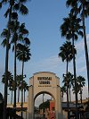
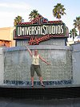
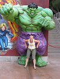
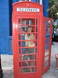
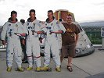
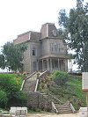
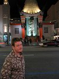

|
|
|
lornaland.co.uk Holidays Photo Gallery Lornaland Natter USA 2005 Journal Menu...New YorkBoston Cooperstown Buffalo Las Vegas Death Valley Yosemite National Park San Francisco San Simeon Los Angeles San Diego Southern California Pictures |
Los Angeles26th September 2005Monday 26th September 2005 It was a very early start this morning. We were up and away by 5.00am! Today we had decided to visit a theme park in LA which gave us two options, Disneyland or Universal Studios.  I really wanted to go to Disneyland but it was around another 45 minutes on top of our journey time which we'd estimated at 6 hours. We stopped en-route for breakfast at Denny's and both opted for the $4.99 meat lovers breakfast - bacon, sausage, 2 eggs, toast and a 3 stack of pancakes. Good stuff! Dan wanted to know why this was the first Denny's we'd been to.  We finally made it Universal Studios at 11.00am. We decided to splash out and buy the "front of line" pass which allowed us to do just what it said. It was slightly more than the normal admission but we thought it would be fun, and the nice people in front had a spare money off coupon so we thought we might as well. Inside the park we headed off to enjoy the many rides. First up was Back to the Future, Jurassic Park and the Mummy. Back to the Future seemed a little "old" but I guess it's to be expected as the film is 20 years old. Jurassic Park was wet and the Mummy was a little scary but great fun.  Next stop was the Back Lot Tour. We got to see the plane crash scene from War of the Worlds and found out that it was a real plane they'd used to cut up! As Universal is a working studio we were told that there were times on the tour when we'd go through quiet zones as people were filming. I was very excited when they told us Desperate Housewives and CIS was being filmed today and craned my neck to see if I could see anyone but I never did. We managed to see everything in the park and go on all the rides at least once. When the park shut, we headed over to our hotel, the Travelodge Sunset La Brea. We'd planned on going to Miyaki's for dinner this evening but after the early start and fun-packed day we decided to find something nearer the hotel. There wasn't a lot to choose from and we ended up in Hooters, so at least Dan was happy! Though he kept complaining that the waitresses had "false legs". We had a look at the hand and foot prints outside Mann's Chinese Heater before heading home to bed. |